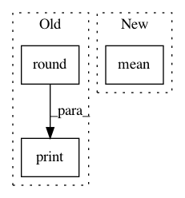

df24b86d68db0a0f4f6947b806e7a0facc47c2b8,pymc3/variational/advi.py,,run_adagrad,#Any#Any#Any#Any#Any#Any#Any#,213
Before Change
print("Iteration {0} [{1}%]: ELBO = {2}".format(i, 100*i//n, e.round(2)))
if verbose:
print("Finished [100%]: ELBO = {}".format(elbos[-1].round(2)))
return uw_i, elbos
def variational_gradient_estimate(
vars, model, minibatch_RVs=[], minibatch_tensors=[], total_size=None,
After Change
print("Iteration {0} [{1}%]: Average ELBO = {2}".format(i, 100*i//n, avg_elbo.round(2)))
if verbose:
avg_elbo = elbos[-n//10:].mean()
print("Finished [100%]: Average ELBO = {}".format(avg_elbo.round(2)))
return uw_i, elbos
def variational_gradient_estimate(
In pattern: SUPERPATTERN
Frequency: 3
Non-data size: 3
Instances
Project Name: pymc-devs/pymc3
Commit Name: df24b86d68db0a0f4f6947b806e7a0facc47c2b8
Time: 2016-06-05
Author: chris.fonnesbeck@vanderbilt.edu
File Name: pymc3/variational/advi.py
Class Name:
Method Name: run_adagrad
Project Name: biocore/scikit-bio
Commit Name: 6561bd2387c1f2e82056071b08413a0c6df036d4
Time: 2015-04-03
Author: gregcaporaso@gmail.com
File Name: skbio/sequence/_sequence.py
Class Name: Sequence
Method Name: mismatch_frequency
Project Name: pymc-devs/pymc3
Commit Name: df24b86d68db0a0f4f6947b806e7a0facc47c2b8
Time: 2016-06-05
Author: chris.fonnesbeck@vanderbilt.edu
File Name: pymc3/variational/advi.py
Class Name:
Method Name: advi_minibatch